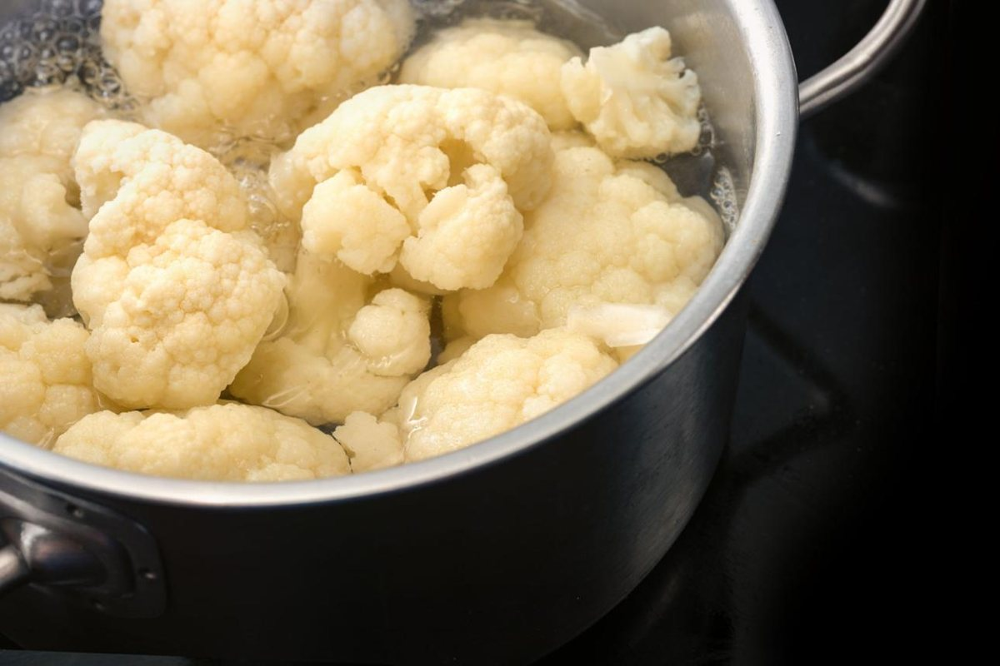
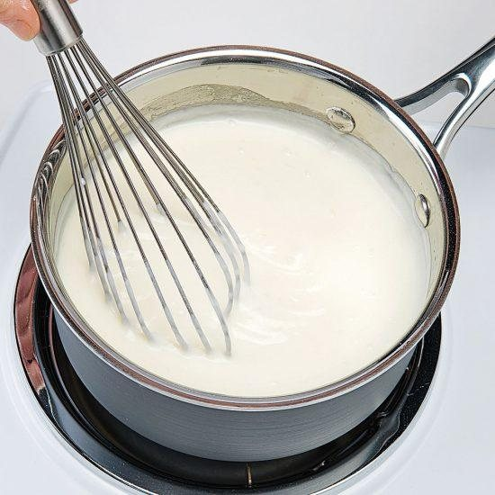
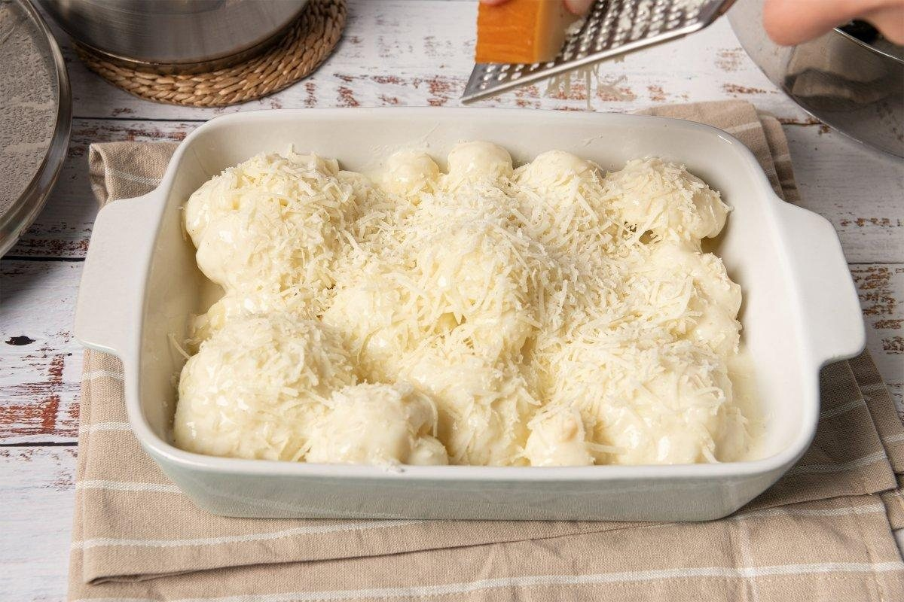
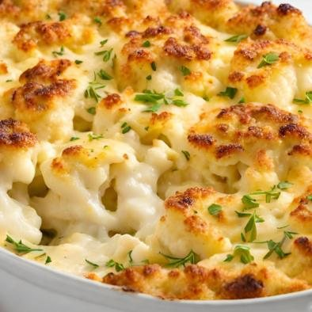

Couve-flor gratinada cremosa com molho branco, muçarela e parmesão, douradinha no forno. Receita fácil, pronta em 40 minutos, para acompanhar o almoço ou jantar.
Esta couve-flor gratinada é cremosa por dentro e tem aquela camada de queijo douradinha por cima que dá água na boca. O molho branco é feito na hora, com manteiga, farinha e leite, e ganha creme de leite e muçarela para ficar ainda mais cremoso. É um acompanhamento perfeito para o almoço em família e também combina com a ceia de Natal.
Modo de preparo
Separe a couve-flor em buquês e cozinhe em água com sal por 5 a 7 minutos, até ficar levemente macia. Escorra bem.
Em uma panela, derreta a manteiga e refogue o alho. Acrescente a farinha de trigo e mexa por 1 minuto.
Adicione o leite aos poucos, mexendo sempre, até formar um molho cremoso.
Tempere com sal, pimenta-do-reino e noz-moscada. Misture o creme de leite e metade da muçarela.
Coloque a couve-flor em um refratário e espalhe o molho por cima.
Cubra com o restante da muçarela e o parmesão.
Leve ao forno preaquecido a 200 °C por 15 a 20 minutos, até gratinar e dourar.
Passo a passo em fotos

1. Cozinhe os buquês por 5 a 7 minutos

2. Molho branco cremoso

3. Molho e queijo por cima

4. Gratinada e dourada
Dica:Escorra muito bem a couve-flor depois de cozinhar. Se ficar com água, o molho afina e o gratinado fica aguado.
Fez esta receita?
Conta pra gente como ficou! Deixe um comentário, mande uma foto do seu resultado
ou marque @melhores.receitas126 no seu post.
Conta pra gente como ficou! Deixe um comentário, mande uma foto do seu resultado ou marque @melhores.receitas126 no seu post.